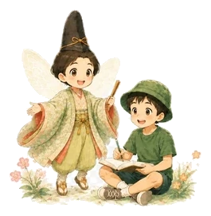

古典のことば
原文
読み
こどもやくこども訳
💡
ことばポイント
💬
親子で話してみよう
小学生にもわかる、古典のいい言葉。

よみたいことばを えらぼう
こころにのこした ことばたち
古今掌は、親子で古典の言葉に触れるためのカードアプリです。受験対策そのものではありません。中学受験にもつながる語彙・教養・読解の土台を育てることを目指しています。
Developed by memetomamoru / 芽芽斗守
小学3年生から6年生くらいを想定しています。低学年のお子さまは、保護者の方が横で読んであげると使いやすくなります。
こども訳は、原文の厳密な逐語訳ではなく、子どもが意味を受け取りやすいように表現しています。一部の古典表現は、子ども向けにやわらげています。
古今掌は、現在のところ、利用者を特定する個人情報を取得しません。ログイン機能、外部広告、アクセス解析は使用していません。
すきな言葉、検索語、BGM設定は、古今掌のサーバーには送信しません。作品データは同一サイト内のJSONファイルを読み込む場合があります。
保護者向け情報として、note: memetomamoru へのリンクを設置しています。外部サイトの個人情報の取り扱いは、各サイトの方針をご確認ください。
今後、機能追加により取り扱いを変更する場合は、このページでお知らせします。
制定日：2026年5月14日
古今掌は、親子で古典の言葉に触れるための無料カードアプリです。利用者は、本規約に同意したうえで本アプリを利用するものとします。
本アプリは無料で利用できます。現時点で、課金、購入、サブスクリプション、有料会員機能はありません。
掲載している古典の原文は、主に著作権保護期間が満了した古典作品を対象としています。一方、こども訳、ことばポイント、親子で話してみよう等の編集文・解説文・画面デザインは、古今掌または制作者に権利が帰属します。
本アプリの内容、仕様、掲載データ、提供方法は、予告なく変更または停止する場合があります。
制定日：2026年5月14日
古今掌は、古典に親しむための学習・鑑賞支援アプリです。学校の成績、受験結果、学習効果を保証するものではありません。
こども訳は、子どもが意味を受け取りやすいようにした意訳です。厳密な逐語訳、学術的な解釈、入試対策としての完全性を保証するものではありません。
内容の正確性には注意していますが、誤字、解釈の違い、表示上の不具合が含まれる可能性があります。必要に応じて、書籍、学校教材、専門資料などもあわせてご確認ください。
外部サイトへのリンク先で発生した損害やトラブルについて、古今掌は責任を負いません。
本アプリの利用、利用できなかったこと、内容の変更・停止等により生じた損害について、法令で認められる範囲で責任を負いません。
制定日：2026年5月14日